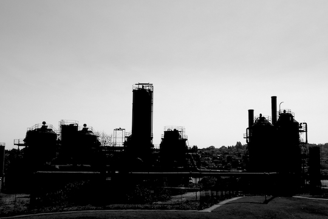
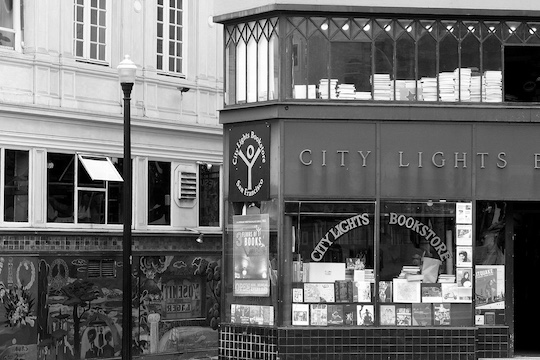
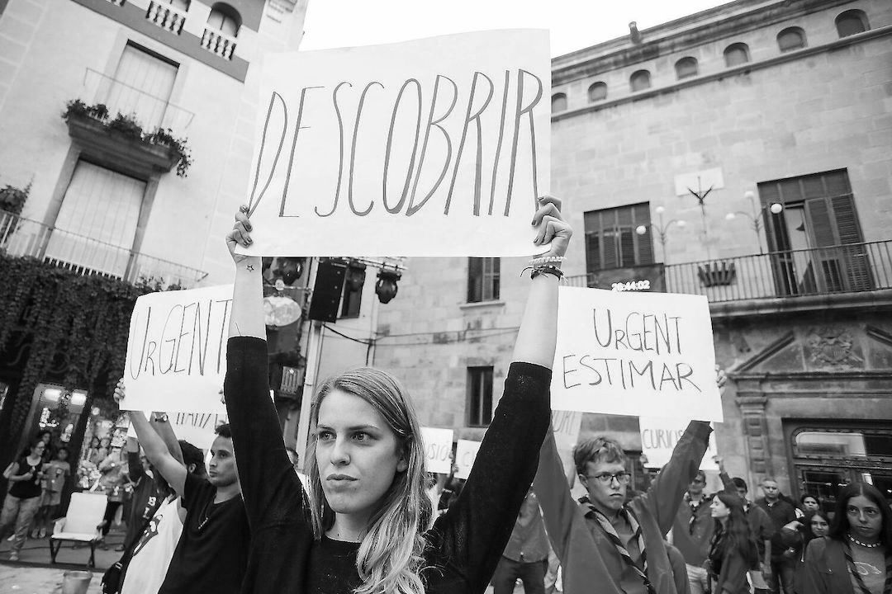
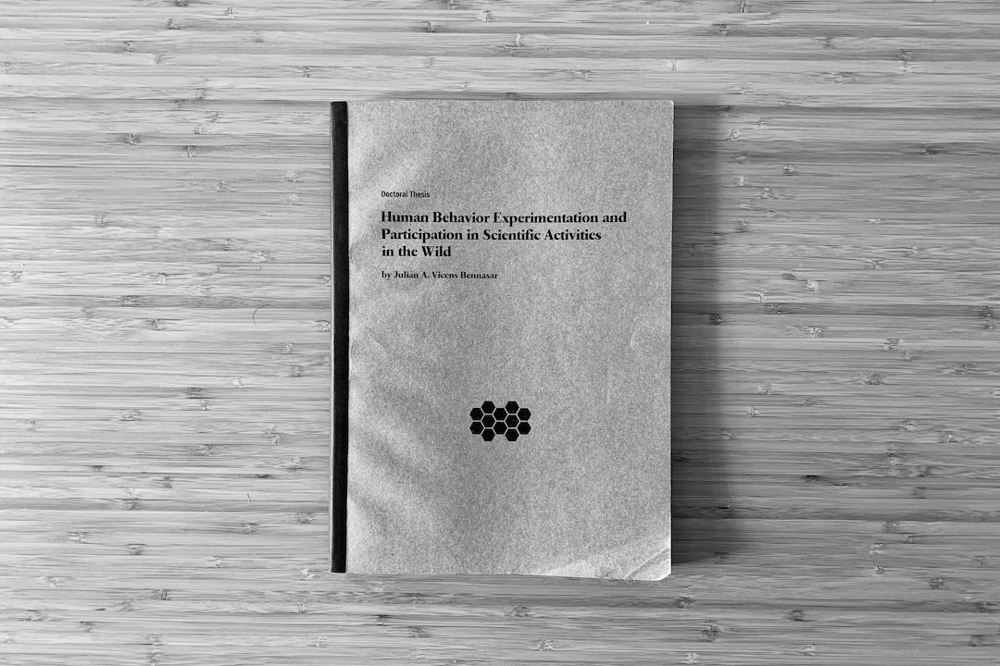
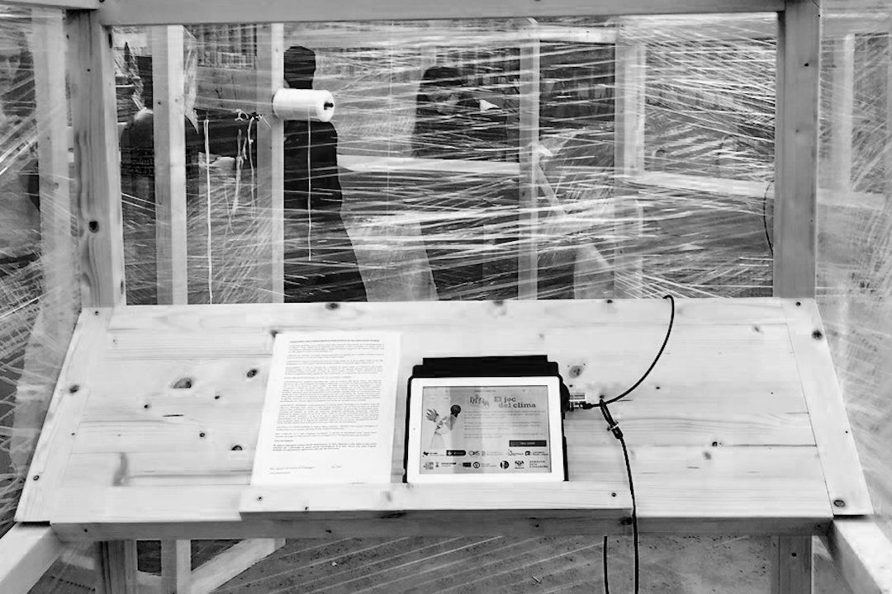
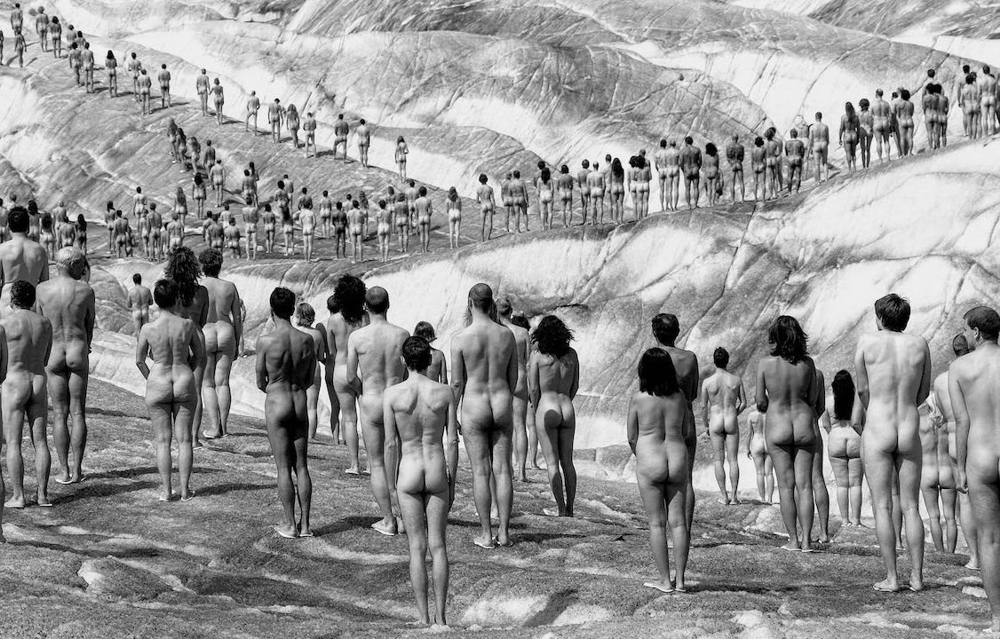
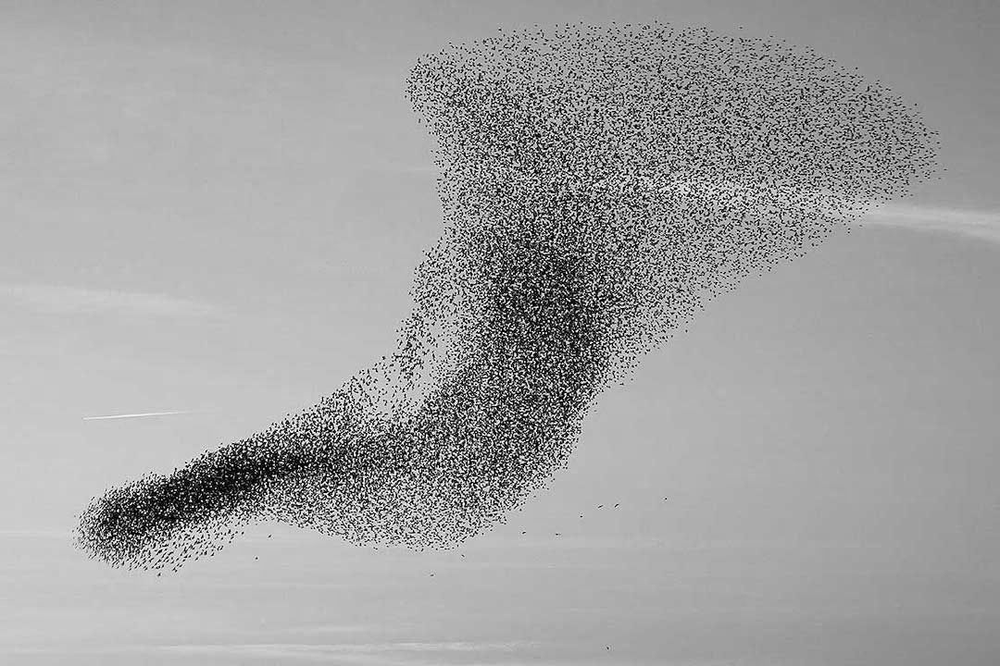
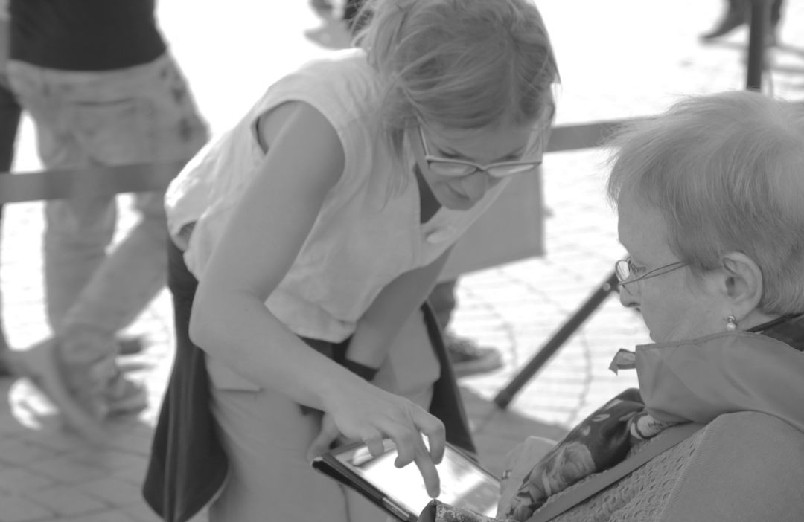
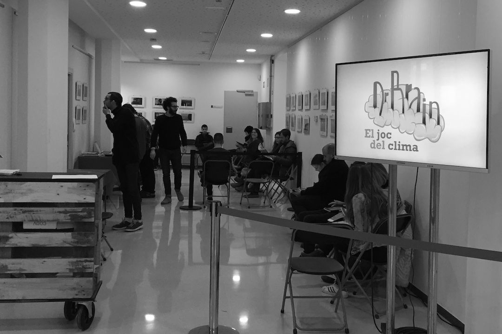

Interessos de Recerca
La meva recerca s'ha centrat, fins ara, en el desenvolupament i l'aplicació d'algorismes computacionals a una gran varietat de temes. En particular, s'ha concentrat en tres grans àrees: l'estudi del procés de presa de decisions i del comportament humà, l'ús d'algorismes d'aprenentatge automàtic per estudiar i desvelar patrons en fenòmens socials, i el desenvolupament de sistemes tecnològics per dur a terme recerca participativa i ciència ciutadana.
Actualment, el meu treball multidisciplinari connecta els sistemes socials complexos, la interacció persona-ordinador, l'aprenentatge automàtic i la ciència ciutadana, i els meus interessos de recerca se centren en:
I. Sistemes Urbans i Justícia Social. Dissenyar algorismes per modelar sistemes urbans des d'un enfocament basat en dades, abordant qüestions com el biaix de dades i algorísmic. Estudiar fenòmens com la gentrificació i els seus efectes relacionats, com el desplaçament de residents i l'impacte en el mercat de l'habitatge; la segregació i integració de col·lectius vulnerables; les desigualtats de gènere en contextos urbans com els patrons de mobilitat i el mercat laboral, o la salut pública i la sostenibilitat en relació amb els ecosistemes urbans, el comportament col·lectiu, la salut ambiental i els factors socioeconòmics.
II. Comportament Humà i Interaccions Socials. Investigar per comprendre millor els comportaments humans davant de riscos col·lectius, els efectes de les desigualtats ubiqües entre individus i la sostenibilitat de la cooperació per augmentar el benestar social. Caracteritzar les interaccions en xarxes socials i plataformes participatives, analitzant fenòmens com la propagació de la desinformació i les notícies falses o la influència en l'opinió pública d'agents autònoms i bots de xarxes socials.
III. Participació Ciutadana en la Ciència. Dissenyar projectes i plataformes participatives per incentivar la implicació dels ciutadans en la ciència i altres accions participatives. Seguint els principis de la cultura de recerca oberta: transparència, obertura i reproductibilitat per ajudar la comunitat a avaluar, criticar, reutilitzar i ampliar aquesta recerca mitjançant plataformes obertes, conjunts de dades oberts, codis oberts i publicacions obertes.
Transversalment, m'interessa l'anàlisi i la visualització de dades per a la presa de decisions basada en evidències i la relació entre la ciència, la tecnologia, l'educació i les arts.
1 de juny del 2021
Article de Recerca

© Julián Vicens | Gas Works Park, Seattle, USA
Recerca col·lectiva i participativa centrada en la mesura dels nivells de NO2
a Barcelona durant quatre setmanes de l'any 2018, en el marc del projecte xAire i
l'exposició «After the end of the world».
L'article de recerca titulat «Large-scale citizen science provides high-resolution nitrogen
dioxide values and health impact while enhancing community knowledge and
collective action» està disponible en accés obert
a la revista The Science of Total Environment.
Demostrem que la ciència ciutadana contribueix a l'esforç
per reduir la contaminació atmosfèrica a les àrees urbanes, aportant evidències ciutadanes per dur a terme
accions comunitàries i polítiques per fer front al problema. Alhora,
les mesures d'alta resolució
ajuden els científics a elaborar models de qualitat de l'aire i avaluacions
d'impacte en la salut.
A més, les dades de qualitat de l'aire combinades amb dades socials permeten dur a terme
anàlisis sobre les desigualtats ambientals a les àrees urbanes i,
en definitiva, l'impacte social de la contaminació. Podeu trobar el codi
i les dades de l'anàlisi social i ambiental en aquest repositori.
21 d'abril del 2021
Article de Recerca
© Domini públic | Red Cross Library Service. Brisbane, 1944
Nou article de recerca centrat en el nostre treball sobre biblioteques públiques i
ciència ciutadana en dos projectes: «BiblioLab: Laboratori de Ciència Ciutadana» i «BiblioLab: Ciència
Ciutadana en Acció». L'article
titulat
«Public libraries embrace citizen science: strengths and challenges» està disponible en accés obert
a la revista "Library & Information Science Research".
Alguns dels resultats més destacats són: les biblioteques públiques poden exercir
lideratge en la promoció i implementació d'iniciatives de ciència ciutadana; la ciència
ciutadana ajuda a atreure nous usuaris, augmentar la cohesió social i millorar
la percepció del valor social d'una biblioteca; i la ciència ciutadana anima els usuaris
a abordar problemes comunitaris de base científica juntament amb els científics.
El projecte «Laboratori de Ciència Ciutadana» va donar lloc a una guia elaborada col·lectivament
per i per a bibliotecaris i ciutadans amb projectes multidisciplinaris de ciència ciutadana
per dur a terme a les biblioteques. A més,
podeu trobar una entrada publicada al blog CCCBLab sobre Ciència Ciutadana i Biblioteques Públiques en un
context global.
8 de gener del 2021
Llibre

© Debaird | City Lights Bookstore, San Francisco
El llibre «The Science of Citizen Science» ha estat finalment publicat amb la contribució de més de cent autors. Personalment, vaig contribuir al capítol «Machine Learning in Citizen Science: Promises and Implications», en el qual aprofundim en l'aplicació de l'aprenentatge automàtic en la ciència ciutadana i en la col·laboració entre ciutadans i màquines per resoldre problemes complexos de manera justa. A més, vaig participar en altres projectes presentats als capítols «Citizen Social Science: New and Established Approaches to Participation in Social Research» i «Participation and Co-creation in Citizen Science».
Aquest llibre cobreix tots els aspectes, incloent-hi els punts forts i les barreres, rellevants per satisfer les moltes expectatives de la ciència ciutadana. És una conclusió meravellosa a quatre anys d'intercanvi i cooperació intensius dins d'una xarxa de recerca europea sobre ciència ciutadana en el context de la COST Action 15212: Citizen Science to promote creativity, scientific literacy, and innovation throughout Europe.
1 de gener del 2020
Article de Recerca

© Martí E. Berenguer | FiraTàrrega
La cooperació en espais hipersocials està molt condicionada pel gènere dels individus que hi interactuen. Aquest experiment, dut a terme a la Fira de Tàrrega el 2017, mesura la disposició de les persones a cooperar, aparellant-les per participar en el joc del dilema del presoner, a l'aire lliure i en el context d'una performance artística. Aquest experiment, realitzat seguint els principis de la recerca participativa i la ciència ciutadana, va posar de manifest com la identitat de gènere de l'altra persona és un factor rellevant pel que fa a la cooperació i la confiança. En escenaris hipersocials, els individus mostren un comportament prosocial, especialment les dones, que exhibeixen nivells alts de cooperació, confiança i capacitat per endevinar el comportament dels altres. L'article de recerca complet «Gender-based pairings influence cooperative expectations and behaviours» és disponible públicament a Scientific Reports i coescrit amb Anna Cigarini i Josep Perelló.
15 de novembre del 2019
Tesi

© Julián Vicens | Informe de tesi
«Premi Extraordinari de Doctorat» atorgat a la meva tesi doctoral «Human Behaviour Experimentation and Participation in Scientific Activities in the Wild» per la Universitat Rovira i Virgili. Vull agrair a Jordi Duch i Mercè Gisbert la seva direcció, als coautors de les publicacions incloses a la tesi i al tribunal format per Marisa Ponti, Frederic Guerrero i Sergio Gomez, que la van distingir amb la menció "Cum Laude". El treball aprofundeix en la comprensió dels sistemes socials complexos i estudia la cooperació en diferents contextos mitjançant experimentació col·lectiva basada en la teoria de jocs i els dilemes socials. La dissertació també aprofundeix en el desenvolupament de plataformes per dur a terme ciència participativa i ciutadana i en l'aplicació d'algorismes d'aprenentatge automàtic per desvelar patrons de comportament.
1 de desembre del 2018
Article de Recerca

© Julian Vicens | Climate Change Game
Citizen Social Lab és una plataforma digital utilitzada per dur a terme experiments conductuals al carrer seguint els principis de la ciència ciutadana. Aquesta plataforma recull dades de la interacció entre individus que s'enfronten a un conjunt variat de dilemes socials (jocs de béns públics, el dilema del presoner, el joc de la confiança...). La plataforma s'analitza amb detall a l'article «Citizen Social Lab: A Digital Platform for Human Behaviour Experimentation Within a Citizen Science Framework» publicat a PlosOne amb dades de més de dos mil persones participants en experiments a l'espai públic. Aquest article està coescrit amb Jordi Duch i Josep Perelló.
1 de novembre del 2018
Article de Recerca

© Spencer Tunick | Aletsch, Alps
Experiment social que estudia la cooperació al voltant de les negociacions contra el canvi climàtic. Es va dur a terme a Barcelona utilitzant metodologies de ciència ciutadana amb la participació de 324 persones. Les conclusions de l'experiment, publicades a PlosOne, van revelar que les desigualtats al voltant de les negociacions sobre el canvi climàtic són més dures per als individus, societats i organitzacions amb pocs recursos, que són, alhora, els que mostren nivells de cooperació més alts en termes relatius.
27 de setembre del 2018
Conferència
© Jan Collsiö | Dagen H
Xerrada a la Conference of Complex Systems (Tessalònica, 2018) dins el taller «Complex systems for the most vulnerable». La xerrada,
«Addressing social justice and unveiling vulnerabilities through game theory and collective experiments», se centrava a presentar l'emergència de comportaments al voltant de reptes socials importants com el canvi climàtic i les seves accions de mitigació, la salut pública i la tendència actual a reforçar els serveis d'atenció domiciliària, i l'impacte en la salut dels ciutadans a causa de fortes desigualtats en la qualitat de l'aire de la ciutat. Tots aquests fenòmens es van estudiar mitjançant un conjunt d'experiments conductuals de laboratori al carrer combinats amb pràctiques de ciència ciutadana.
29 de maig del 2018
Xerrada

© Unknow author | Starlings flow
Presentació del nostre treball sobre les interaccions socials a la comunitat d'atenció en salut mental a la VII Jornada Complexitat: sistemes complexos de la teoria a la ciència de dades. La xerrada «A game theory approach to the mental health community» aprofundeix en els trets conductuals dels grups de rol i el capital social en l'ecosistema de salut mental.
© Julián Vicens | Informe de tesi
Defensa de la meva tesi doctoral «Human Behaviour Experimentation and Participation in Scientific Activities in the Wild» a la primavera del 2018. La tesi va ser dirigida per Jordi Duch i Mercè Gisbert. Aquest treball, desenvolupat al llarg de quatre anys, aprofundeix en la comprensió dels sistemes socials complexos i estudia la cooperació en diferents contextos (canvi climàtic, comunitat d'atenció en salut mental, etc.) mitjançant experimentació col·lectiva basada en la teoria de jocs i els dilemes socials. La dissertació també aprofundeix en el desenvolupament de plataformes per dur a terme ciència participativa i ciutadana i en l'aplicació d'algorismes d'aprenentatge automàtic per desvelar patrons de comportament. Va ser defensada amb èxit i distingida amb la menció "Cum Laude" pel tribunal format per Marisa Ponti, Frederic Guerrero i Sergio Gomez.
28 de febrer del 2018
Article de Recerca

© OpenSystems | Mental Health Day, Lleida
Els trastorns mentals tenen un impacte enorme en la nostra societat. A «Quantitative account of social interactions in a mental health care ecosystem: cooperation, trust and collective action» presentem els resultats d'un conjunt de jocs que ens permeten explorar diferents trets conductuals dels grups de rol de la comunitat d'atenció en salut mental mitjançant pràctiques de ciència ciutadana. L'evidència reforça la idea del capital social comunitari, amb els cuidadors i els professionals exercint un paper capdavanter. Tanmateix, el cost de l'acció col·lectiva recau principalment sobre les persones amb una condició de salut mental, cosa que en revela la vulnerabilitat. Finalment, assenyalem les condicions sota les quals la cooperació entre els membres de l'ecosistema es manté millor, suggerint com es poden promoure cercles virtuosos d'inclusió i participació en un marc d'"atenció en la comunitat". Aquest article de recerca va ser coescrit amb Anna Cigarini, Josep Perelló i Anxo Sanchez.
1 de setembre del 2016
Article de Recerca

© OpenSystems | DAU Festival, Barcelona
Experiment de laboratori al carrer en què 541 persones s'enfronten a quatre jocs diàdics diferents amb l'objectiu d'establir regles generals de comportament que dicten les accions dels individus. En analitzar les observacions d'aquestes situacions socials simples mitjançant algorismes d'aprenentatge automàtic, trobem que una majoria dels subjectes s'ajusten, amb un alt grau de consistència, a un nombre limitat de fenotips conductuals: envejós, optimista, pessimista i confiat. Els resultats complets es publiquen a Science Advances.